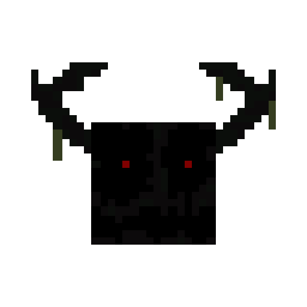

Ominous Valley

>> TEMPERATURE >MOSTLY_COLD;
>> CLIMATE_DOWNFALL >OCCASIONALLY;
>> CIVILIZATION >CONSUMED;
>> DANGER_LEVEL >2.75/5;
DESCRIPTION

A completely desolate, mystical valley, composed of dark and palish-purple vegetation, which is commonly known as “corruption”; every plant inside this biome is designed to be a trap for any possible prey. A dense fog composed of the massive accumulation of spores is the biggest obstacle in this area, decreasing your vision; this is more noticeable during the night, where the mist seems to surround you even more closely. The trees inside this biome have a curious detail: during the day they’re weak and enter some type of “sleep mode,” but when night falls, they become resistant; one theory surrounding this is that the moonlight somehow affects their behavior, but the theory gets scrapped when literally they act the same when they don’t have any type of contact with it.
ORIGIN

In the past we had no clue about their existence or why there are so many of them, but thanks to some ancient records our historians have been able to glue the pieces and have a somehow valid explanation.
The story begins in a very known town because the big purplish tree was in the middle of it. That tree has been there for ages; someday one of the hanging roots from the tree reached the floor and began to dig and grow so quickly that nobody noticed. The corruption started to grow everywhere; any plant or flower transformed, the vegetation was ravaged, and many trees started to grow inside of the town. The roots reached so far that they started to expand their corruption even further, but not all of them succeeded; instead, those failed attempts grew the “Corruptinies” we all know, as if it were some kind of checkpoint for a future “Ominous Valley.”
Also, we are unsure of the cause of this, but many people affirm that they’re able to hear voices/whispers when they are near an “Ominous Valley,” mostly the voices of close people that are no longer alive. If this is true, we could confirm that the large number of disappearances within this valley were not mere suicides but manipulations of unreal voices.
VEGETATION
We are going to classify the vegetation from this biome into 3 groups:
- Common vegetation.
- Trees, food & mushrooms.
- Flowers.

The common vegetation inside this biome is mostly composed of patches of “Corrupted Moss” that are usually accompanied by “Corrupted Short Grass.” These are simple, harmless little weeds; instead, the “Corruptles,” which are a more developed version of the “Corrupted Short Grass,” have the ability to tangle and slow down their prey in order to make them more accessible to the possible dangers of the valley. “Ghostflow bushes” are simply bushes during the day, but when nights fall, these start releasing something somehow mixed between liquid and gas that evaporates instantly and seems to take the shape of sorrowful faces.

Even if the trunks of the trees inside of the “Ominous Valley” are quite impressive, their leaves also have some too; these are the cause of the roots that our scientists have nicknamed “Root of Corruption,” as if they were saying that they are the cause of the problem. Returning to the leaves, they can also drop their saplings to grow even more trees, but it should be noted that in some very isolated cases, they have the chance of growing without leaves, as if they were completely dead.

The trees also provide food; the “Root of Corruption” grows “Corrupted Berries,” which are a healthy and delicious resource. However, in the case of the leaves, there is a chance that they may contain a “Sinner Apple.” This strange apple may satisfy your hunger in an instant, but you will still feel hungry. Not only that, but it also holds a kind of curse that will alert any kind of threats around you, leaving you completely exposed to any danger even if there's fog on the way.


The only known fungus in these biomes is the “Glowshroom,” which is really useful and helped us to research the valleys more easily and safely. If you press their stems, they shoot their spores in all directions in the shape of a ring. Those spores stick everywhere and vanish after a while, but those spores highlight any type of being nearby, allowing you to know when a threat is closer. Fun fact: if they are planted in mycelium and fertilized, they can become giant, which is the only way to turn them into a renewable resource.

Before we talk about the flowers, it should be mentioned that “Corruptinies” can be found inside this biome; however, they will neither spread their spores nor spread themselves as they do in other cases. We think this behavior is due to how the plant sees the “Ominous Valley” as their real home or an ally that they must not betray. Instead, we have the “Corrupted Grass,” a dirt full of a bright, lush purple. This block can spread and corrupt over dirt and grass; if someone steps over this block, his vision will corrupt and his movement will be altered. It's not lethal but can become an issue if something is chasing you.

About the flowers, we can find the “Necroveil,” which seems to have been considered a funerary flower due to how it’s represented in most of the ruins; the “Empty Roses,” which are simple roses that, for some strange reason, have symptoms of depression despite being a flower; and the “Stalker Gloomstalk,” which is a type of sunflower with an eye in the center, the origin and purpose of which are unknown. However, there is a theory that these flowers are there to watch you and always know where you are, as if they had some kind of connection to the threats of the valley.

We have two more flowers that do not seem to be normal at all, the “Bonesay,” which are twisted bones with “Corrupted Moss” on top as if they were leaves. This flower suggests that the victims of the valley end up turning into flowers or are simply used as a fertilizer. The “Smilley Bud” is a flower that smiles and sometimes laughs; it doesn’t seem to belong to the “Ominous Valleys.” The “Ceinsences” is an aromatic flower that spreads some type of purple mist around. After researching deeply about how the fauna works inside the valley, we discovered that those pale pumpkins with purple lighting were not simply decorative, but that the light was actually some souls trapped inside them.
RESEARCH ADVANCES

Our research team has discovered inside the valley (it can also be found in other places) locked purple barrels. They tried to open the lock with everything they could afford, but nothing worked. After many hours we finally discovered that it can be unlocked using a “Hornbranch.” Once opened, the barrel dispenses 4 items and after a while explodes. After the discovery we theorized that the barrel had some type of mysticism paradox or something; we didn’t waste any time and began to test with several barrels and improvements we made to the “Hornbranch.” After many failed attempts we were able to confirm the theory after we were able to create an upgraded version of the “Hornbranch”; even if it was somehow more useful, its lifetime was considerably reduced.

Thanks to the “Ominous Pumpkin” and its capacity to store souls, our scientists have been able to create 2 beings known as “Corrupted Golems” [EXPERIMENT-2120-A/B]; one is made of iron and the other is made of snow. The iron one is disciplined, loyal, and highly protective, capable of disarming enemies and becoming even stronger and faster as it takes damage; its pumpkin inflates and squishes with total freedom. On the other hand, we have the snow one, which is unstable and chaotic; it leaves a trail of corrupted snow whenever it goes. Although it is physically weaker than its iron variant, it, compensated with a wider and more erratic ranged attack, fires “Corrupted Snowballs” capable of inflicting severe negative effects. Also, it often attacks its iron counterpart just to annoy it.
Despite their protective nature, both golems are free souls and do not tolerate being attacked; if they feel threatened, they will not hesitate to kill anyone, including their owner. For safety reasons, it is strongly advised to always carry scissors or a similar tool: the pumpkin is the core of their existence, and removing it strips them of all purpose, leaving them as empty vessels.
MUSIC
This track will play after encountering a "Soulbound" at night: |
These tracks randomly play while being inside the biome: |
KNOWN THREATS
THE SOULBOUND

There’s only one major threat inside the valleys: “The Soulbound” [EXPERIMENT-1242], wooden statues made of the same wood as the trees from the valley. Because of this, they share some characteristics, such as, for example, during the day, they go into hibernation and are vulnerable, but when night falls, they become resistant and active. However, it has been discovered that they are only able to move when no one is watching them. They do this as a strategy to fool their victims into thinking they are just wooden statues. They are capable of persuading, climbing great distances without you even noticing, and even moving at great speed. If they leave the “Ominous Valley”, they’ll die, making them dependents to the valley; although they can survive inside “Corrupted Spores,” and in some odd cases they can survive inside “Hazed Plains,” but those are different beings. They were given their name because of their supposed ability to use the voices of beloved ones from their prey to lure it into them.